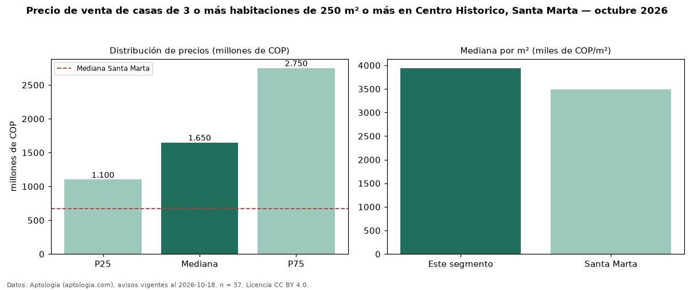

Precio de venta de casas de 3 o más habitaciones de 250 m² o más en Centro Historico, Santa Marta — octubre 2026
Con 37 avisos vigentes, el precio mediano de casas de 3 o más habitaciones de 250 m² o más en venta en Centro Historico, Santa Marta es COP 1,65 mil millones. Frente a la mediana de las casas de 3 o más habitaciones en venta de Centro Historico (COP 1,10 mil millones, n = 53), queda 50 % por encima; este segmento reúne el 70 % de esos avisos. Por metro cuadrado, la mediana es COP 3,94 millones/m² (n = 37), 0 % por encima de las casas de 3 o más habitaciones en venta de Centro Historico (COP 3,94 millones/m²). El área mediana anunciada es 417 m². La mitad central de los avisos va de COP 1,10 mil millones a COP 2,75 mil millones (razón 2,5), una dispersión alta. El estrato más frecuente es 4 (59 % de los avisos con estrato). La mediana de todas las casas en venta de Santa Marta es COP 670 millones (+146 % de diferencia). 5 % de los avisos con el dato declara parqueadero. Datos: Aptología (aptologia.com), CC BY 4.0 — https://www.aptologia.com/casas-en-venta/santa-marta/centro-historico. Archivos: PDF, CSV con las cifras y gráfica PNG.

| Avisos únicos | 37 |
|---|---|
| Percentil 25 | COP 1.100.000.000 |
| Mediana | COP 1.650.000.000 |
| Percentil 75 | COP 2.750.000.000 |
| Mediana por m² | COP 3.941.441 |
Fuente: avisos vigentes de portales inmobiliarios recopilados por Aptología, deduplicados (mínimo 30 avisos únicos por celda). Precios pedidos, no cerrados. Fecha: 2026-10-18.